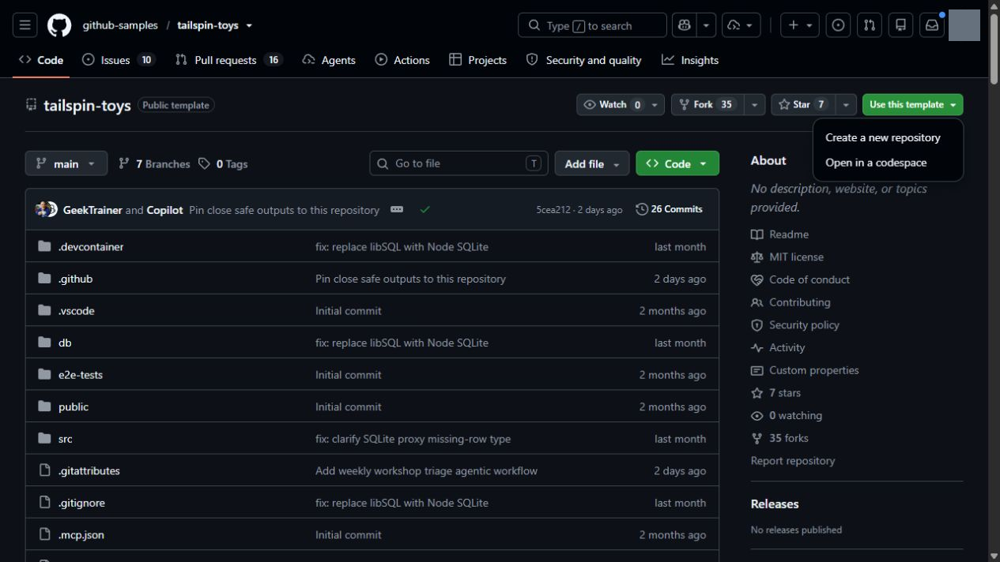
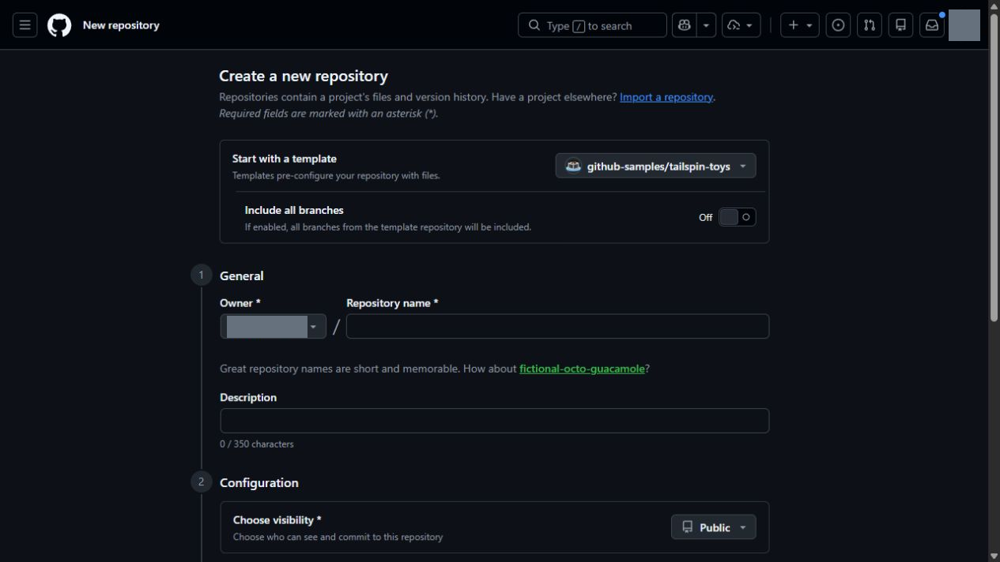

この章の進め方： まず GitHub Web 上で演習用のコピーリポジトリを準備し、次章で Copilot App に接続します。2026年9月13日の実機確認により、現在の取得先は修正済みの非公開テンプレート（
iwizsophy/dev-days-tailspin-template）に変更されています。テンプレート複製 API に加え、GitHub Web フォームを Private で送信し、コピー先に課題8件が自動作成されることを確認済みです（詳細は UI 確認表 を参照）。
GitHub Copilot app は、Copilot のエージェント機能と GitHub のリポジトリ管理を一元的に扱うデスクトップアプリケーションです。Issue や Pull Request に素早くアクセスでき、自律的なエージェントを活用した開発が可能です。 本ワークショップでは、Astro で構築された EC アプリ「Tailspin Toys」と GitHub Copilot app を組み合わせ、ローカル環境で開発を進めます。アプリをインストールする前に、前提環境として必要な Node.js をローカルに導入し、演習用リポジトリを用意します。
本レッスンでの到達目標は次の2点です。 - プロジェクトのビルドおよびテストをローカルで実行できるよう、適切なバージョンの Node.js をインストールする。 - 修正済みテンプレートから Tailspin Toys プロジェクトの演習用コピーを作成し、初期バックログを準備する。
1. Node.js のインストールとバージョン確認
本ワークショップの演習では、エージェントが実装した機能を検証するために、ローカル環境で Tailspin Toys のテストスイート（Vitest 単体テストおよび Playwright E2E テスト）を実行します。そのためには Node.js の環境が必須となります。
バージョン要件に関する重要な注意
プロジェクトの package.json に記載された最低要件だけでなく、固定された依存関係の要求を満たすバージョンを使用する必要があります。上流本体の最低条件記述だけでは一部の依存要求を満たさなかったため、本教材の実機検証では Node.js 24.19.0 を使用しています（配布テンプレートの .nvmrc は 24.19.0、engines.node は >=24.19.0 <25 に設定済みです）。
確認とインストール手順
プラットフォームを問わず、公式サイトのインストーラーを利用するのが最も確実です。
- ターミナル（Windows Terminal、macOS Terminal、または普段利用しているシェル）を開きます。
-
次のコマンドを実行し、現在インストールされている Node.js のバージョンを確認します。
node --version -
出力されたバージョンが演習コピーの要求（Node.js 24.19.0 推奨、
>=24.19.0 <25）を満たしている場合は、次のセクションへ進んでください（講師は、Copilot App の実行環境でも同一の Node.js バージョンが参照されることを確認してください）。
ヒント Node.js が未導入であるか、またはバージョンが適合しない場合にのみ、以下のステップ 4〜9 を実行してください。
- Node.js のダウンロードページ を開きます。
- 使用している OS に合わせた LTS ビルドをダウンロードします。
- インストーラーを起動し、既定の設定でインストールを進めます（Windows の場合は、Add to PATH が有効になっていることを確認してください）。
- インストール完了後、新しいターミナルウィンドウを開き直します。
-
次のコマンドを実行し、新しく導入されたバージョンを確認します。
node --version -
要求バージョンが正しく表示されることを確認します（※Copilot App がすでに起動していた場合は一度完全に再起動し、古い環境変数が引き継がれないようにしてください）。
ヒント コンテナー環境を利用する場合、Docker Desktop が導入されていれば、ローカルに直接 Node.js をインストールする代わりにリポジトリ同梱の dev container を利用することも可能です。dev container 内には必要な Node.js 環境が最初から含まれています。
2. 演習用リポジトリの作成
受講者は、Tailspin Toys プロジェクトの演習用コピーを各自の GitHub アカウントに作成して作業を進めます。教材用の修正済み Tailspin Toys テンプレート を開き、テンプレートからのコピー作成手順 に沿って準備を行います。
テンプレートの仕様と修正内容
- 取得先リポジトリ：
iwizsophy/dev-days-tailspin-template - 教材対応版：
v2026.09.13.1 - アクセス権：非公開リポジトリのため、受講者は事前に講師から閲覧権限を受け取ってください。
- 適用済み修正：上流の固定コミット
bae0036をベースに、PR Readiness の YAML エスケープ修正、MCP 設定（mcpServers）の修正、Node.js 24.19.0 の整合、依存パッケージの更新、およびエージェント環境向けのサーバー起動スクリプト（scripts/serve.mjs）の導入がすべて適用済みです。受講者が手動でパッチを当てる必要はありません（なお、星評価やフィルター機能などの演習の解答コードは含まれていません）。 - リポジトリの峻別：教材自体のリポジトリ（
dev-days-jp）と、コードを変更する演習用コピー（Tailspin Toys）を混同しないように注意してください。
重要 講師向けの配布判定基準： 配布版
v2026.09.13.1は機能検査をすべてパスしており、依存性監査（npm audit）において Critical および High は 0 件です。ただし、drizzle-kit配下に Moderate 4 件が残存しているため、受講者への本番配布前に配布元のWORKSHOP.mdに記載された残件と確認範囲を必ず確認してください。
GitHub Web での作成手順
※以下の掲載画像2点は、テンプレート取得先変更前の画面例です。画像内の古いリポジトリ名ではなく、必ず本文に記載された iwizsophy/dev-days-tailspin-template を選択してください。
- ブラウザーで、教材用テンプレートリポジトリ
https://github.com/iwizsophy/dev-days-tailspin-templateを開きます。 -
ページ右上の Use this template ボタンを押し、ドロップダウンから Create a new repository を選択します。

実機撮影：2026-09-13、GitHub Web。撮影範囲全体を掲載（切り抜きなし）。灰色の箇所はアカウント・検証用リポジトリ・ローカルパス等の識別情報や個人の利用量をマスク。GitHub Web の github-samples/tailspin-toys。Use this template → Create a new repository。撮影時の main は実走の固定コミットと異なる。取得先変更前の操作位置の例。現在の取得先は iwizsophy/dev-days-tailspin-template。画像中の上流名を選ばない。 -
画面の各項目を設定します。 - Start with a template：
iwizsophy/dev-days-tailspin-templateと表示されていることを確認します。 - Include all branches：既定の Off（チェックなし）のままにします。 - Owner：自身のアカウントまたは演習用 Organization を選択します。 - Repository name：演習用のリポジトリ名（例：dev-days-tailspin-toysなど）を入力します。 - Choose visibility：講師・メンターの指示に従います（2026年9月13日のフォーム初期値は Public でした。非公開で演習を行う場合は Private を選択してください）。
実機撮影：2026-09-13、GitHub Web。撮影範囲全体を掲載（切り抜きなし）。灰色の箇所はアカウント・検証用リポジトリ・ローカルパス等の識別情報や個人の利用量をマスク。GitHub Web のテンプレート作成フォーム上部。Owner・Repository name・Choose visibility の位置。名前未入力・送信前。取得先変更前の操作位置の例。現在の取得先は iwizsophy/dev-days-tailspin-template。画像中の上流名を選ばない。 -
フォーム下部の任意項目 Jumpstart your project with Copilot の Prompt 欄は、本ワークショップでは空欄のままにします。
- 入力内容を確認し、Create repository ボタンを押します。
- リポジトリの作成完了後、その完全なパス（
organization-or-user-name/repository-name）を控えておきます（次章以降で使用します）。
補足 コピー先リポジトリの作成後、GitHub Actions の Bootstrap template issues ワークフローが自動実行され、演習で使用する8件のバックログ Issue が作成されます。リポジトリの Issues タブに課題が表示されない場合は、自身のコピーの Actions タブで実行状況を確認し、必要に応じて Bootstrap template issues → Run workflow を手動実行してください（配布元テンプレート自身ではこのワークフローをスキップする設計になっています。上流の参照元リポジトリへ Issue を起票しないよう厳重に注意してください）。
注意 講師向け緊急対応： 受講者の環境トラブル等により作業保全が緊急に必要な場合のみ、講師専用 CLI 対応手順 を参照してください。CLI で環境構築を代替した場合、この章の App 操作体験は「未完了」として記録します。
まとめと次のステップ
準備が整いました。プロジェクトをコンピューター上でビルドしてテストできるように Node.js をインストールし、テンプレートから Tailspin Toys リポジトリの自分用コピーを作成しました。
次は GitHub Copilot app をインストールし、作成したリポジトリを接続して、ワークスペースを確認します。レッスン 1「GitHub Copilot app のインストール」に進んでください。